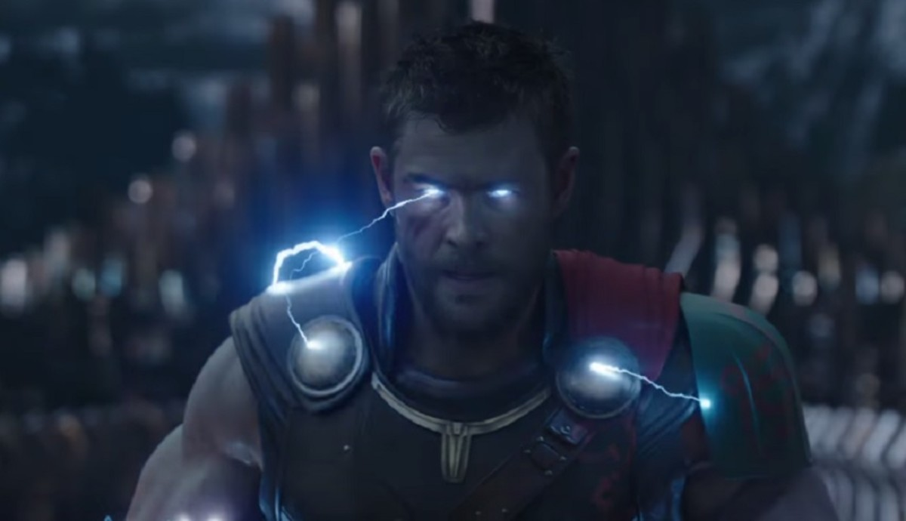
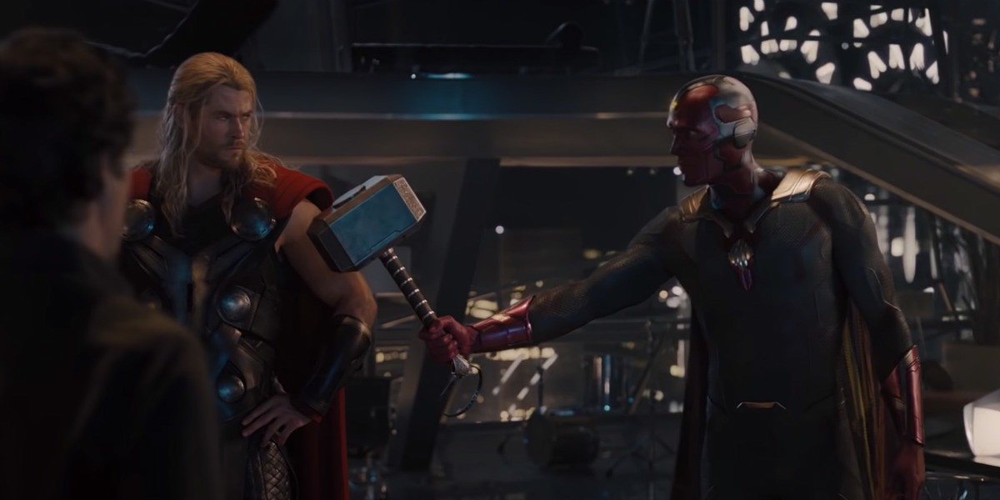
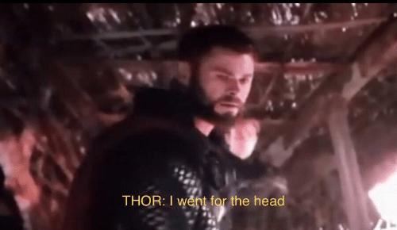
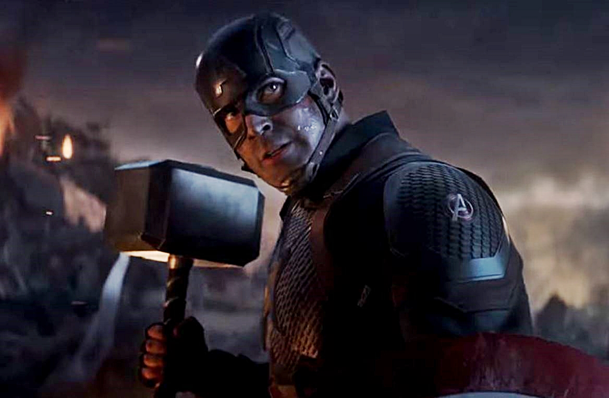
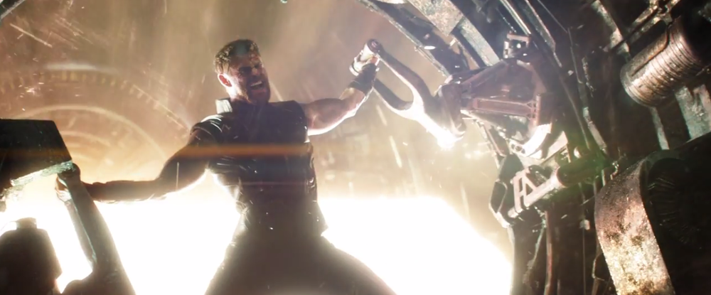

SOUVENIR:

Thor unleashes his POWER
Suddenly, Thor’s eyes fill with electricity and lightning sparks from his fingers.
his powers were fully awakened at last. Thor then hits his sister with “the biggest lightning blast
in the history of lightning blasts,” and flies to the rainbow bridge.

The Birth of VISION
it was repurposed by Tony Stark and Bruce Banner,
who uploaded the remnants of Stark's personal A.I. J.A.R.V.I.S. into it.
while in between fighting ,THOR came and unleashed his power and VISION was born.

THOR vs HULK
Across the arena, the door begins to open and who should appear before Thor but the Hulk.
The Asgardian then shocks the crowd by shouting “YES!” at the top of his voice
before declaring to the Grandmaster that he’s a friend from work.

I went for the head!
Thor has had enough and decides that this time, he’ll aim for the head.
In one swing of Stormbreaker, Thor decapitates the villain and gives himself
some closure from the battle of Wakanda.

Captain lift's Mjolnir
As Captain America summons the hammer into his hands,
Thor gleefully exclaims, “I knew it!”

STORMBREAKER
Thor being burnt in the forge at Nidavellir when forging Stormbreaker is
also an allusion to him being reborn (reforged) as well, making him stronger
and able to seriously hurt Thanos